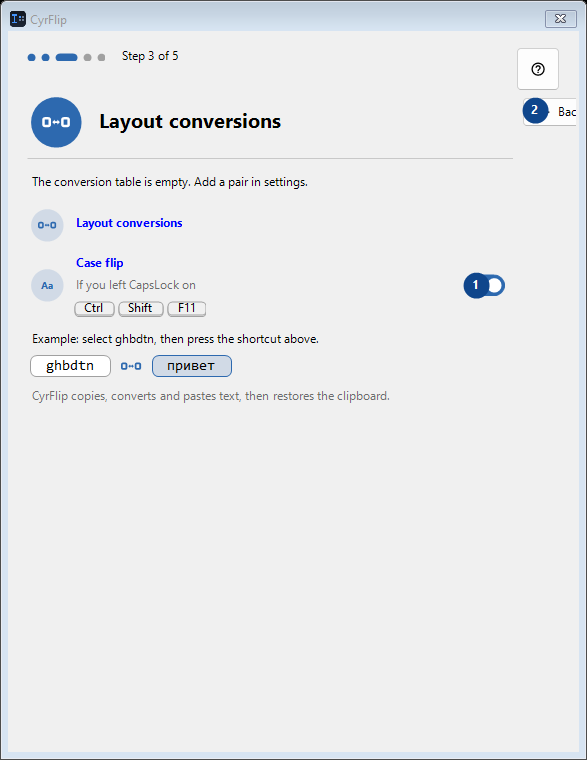
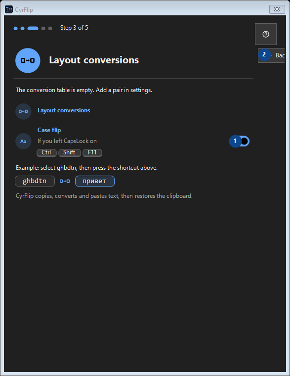

Layout conversions
What this is for
Read the numbered elements, choose the values you need, then use the window’s command to continue.


In this order
Read the numbered elements, choose the values you need, then use the window’s command to continue.
The elements
1. Case flip
On
Your shortcuts2. Back
Use this command when you need the action named above. Review any confirmation before accepting it.
Your shortcuts3. Next
Use this command when you need the action named above. Review any confirmation before accepting it.
Your shortcuts4. Skip
Use this command when you need the action named above. Review any confirmation before accepting it.
Your shortcuts